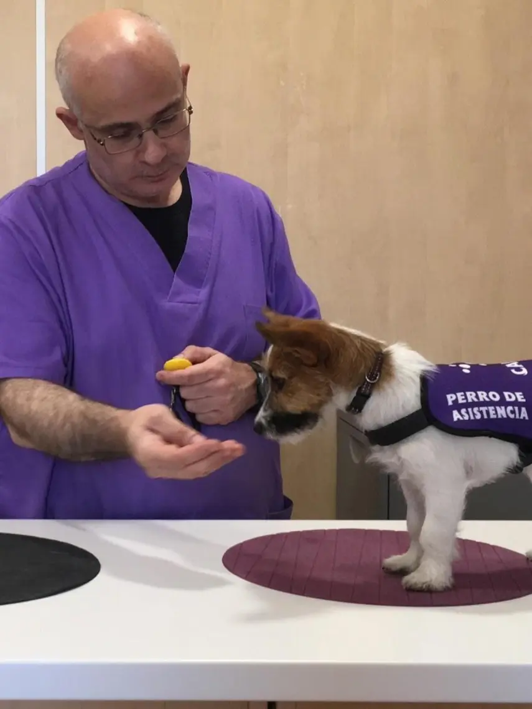
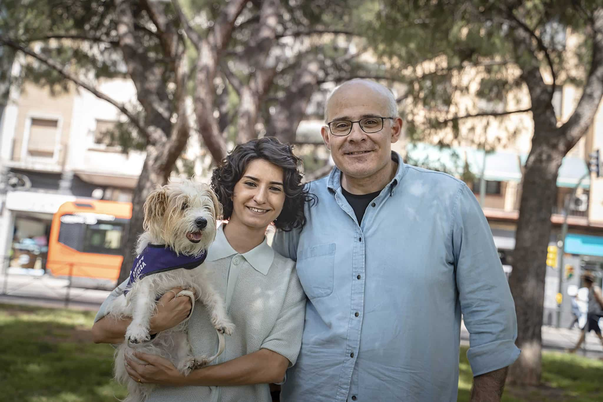

Equipo profesional especializado en perros de alerta médica
Somos un equipo especializado en la selección, educación y adiestramiento de perros detectores para personas con diabetes tipo 1 o epilepsia.
Nuestro objetivo es dar respuesta a la necesidad de anticiparse a las crisis provocadas por estas patologías. Adiestramos a los perros para que sean capaces de identificar la sustancia y los cambios que una persona emite minutos antes de un hipo o una crisis de desconexión sensorial (epilepsia).
Formamos a los usuarios para que sepan manejar e interpretar correctamente los marcajes del perro, pudiendo tomar medidas que minimicen el riesgo desencadenado por la crisis.


Paco y Lidia
El lema de CANEM es KAIZEN, una filosofía de mejora continua: pequeñas mejoras constantes que generan grandes beneficios a largo plazo.
Nos gusta mejorar, cambiar y evolucionar. La entrega y el seguimiento con cada familia están basados en la experiencia de más de 250 familias que nos han ayudado a perfeccionar el servicio.
Más de 10 años liderando este proyecto nos han enseñado la importancia de la cercanía, la empatía y la transparencia en cada proceso de selección y adiestramiento.